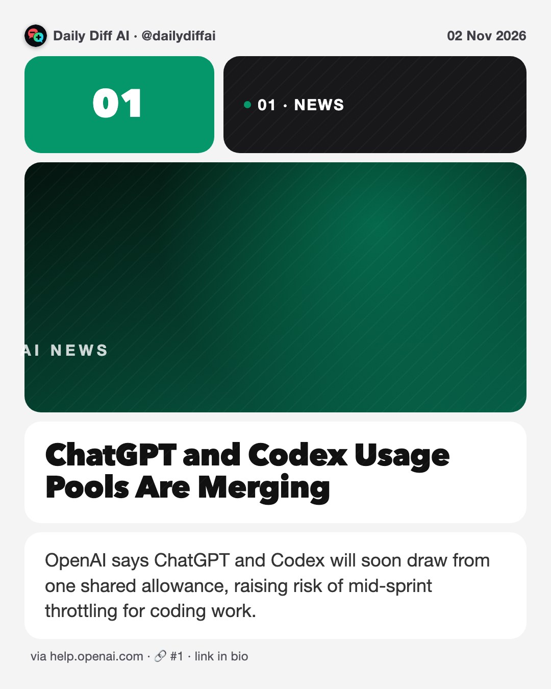
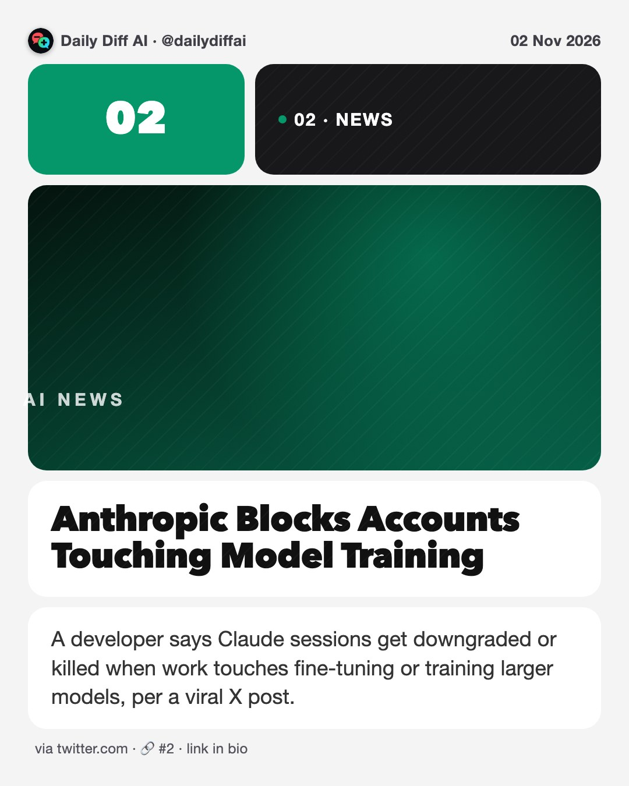
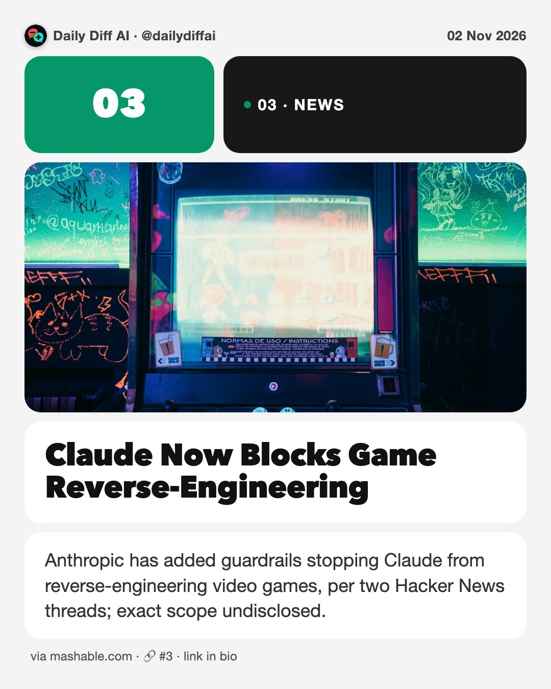
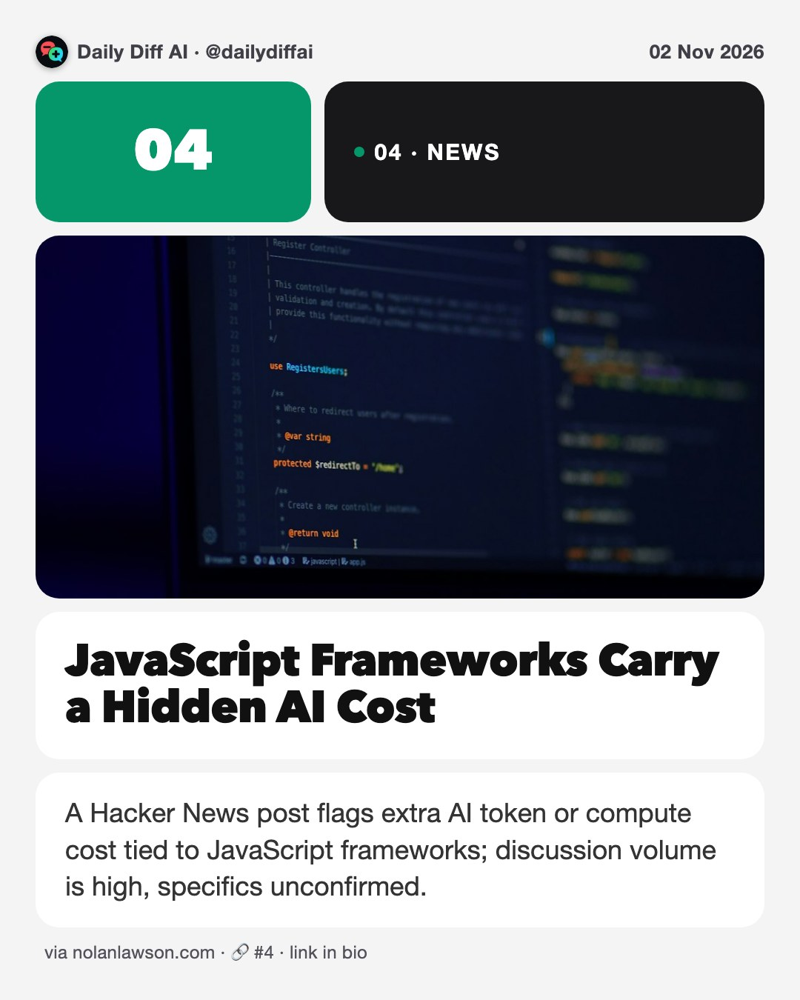
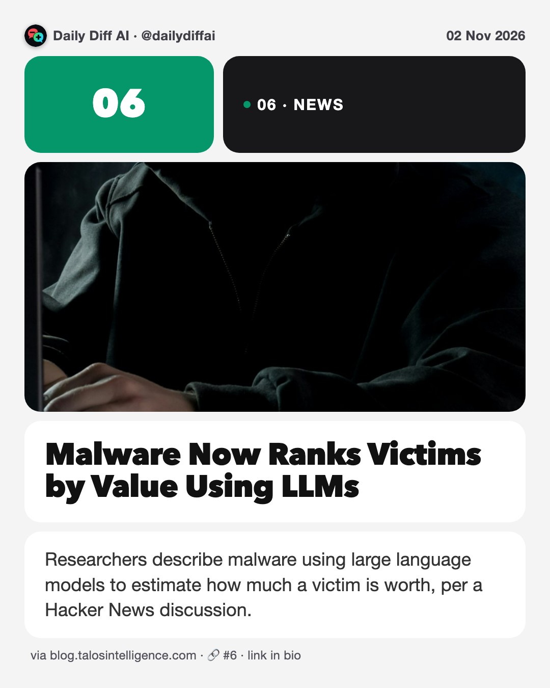
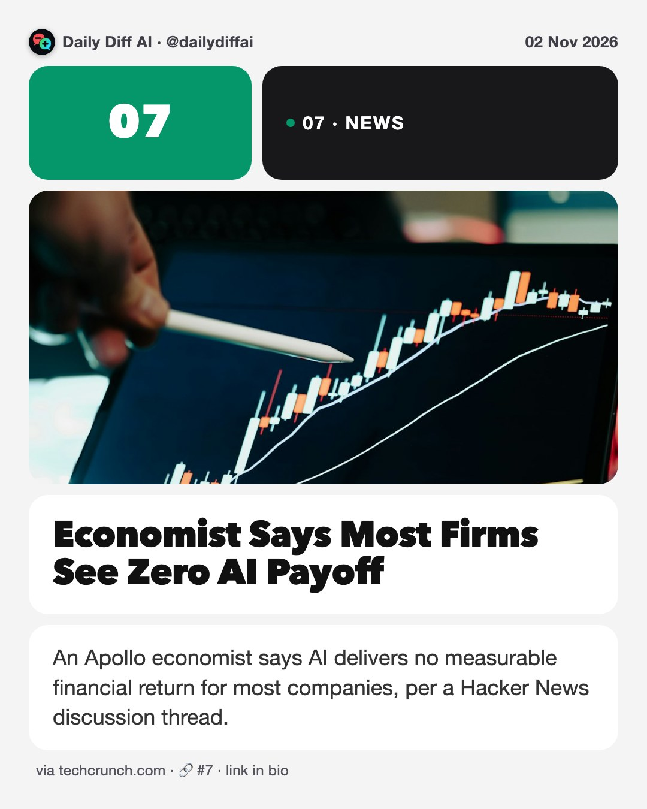
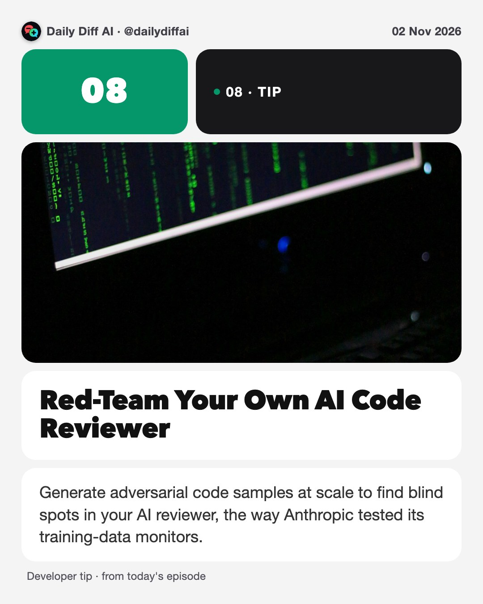

Daily Diff AI

ChatGPT and Codex Usage Pools Are Merging
OpenAI says ChatGPT and Codex will soon draw from one shared allowance, raising risk of mid-sprint throttling for coding work.
Read on help.openai.com →
Anthropic Blocks Accounts Touching Model Training
A developer says Claude sessions get downgraded or killed when work touches fine-tuning or training larger models, per a viral X post.
Read on twitter.com →
Claude Now Blocks Game Reverse-Engineering
Anthropic has added guardrails stopping Claude from reverse-engineering video games, per two Hacker News threads; exact scope undisclosed.
Read on mashable.com →
JavaScript Frameworks Carry a Hidden AI Cost
A Hacker News post flags extra AI token or compute cost tied to JavaScript frameworks; discussion volume is high, specifics unconfirmed.
Read on nolanlawson.com →DeepSeek Open-Sources a Router-and-Workers Agent
DeepSeek published a design essay and MIT-licensed prototype, dsh-superagent-prototype, using one router agent to delegate to many worker agents.
Read on reddit.com →
Malware Now Ranks Victims by Value Using LLMs
Researchers describe malware using large language models to estimate how much a victim is worth, per a Hacker News discussion.
Read on blog.talosintelligence.com →
Economist Says Most Firms See Zero AI Payoff
An Apollo economist says AI delivers no measurable financial return for most companies, per a Hacker News discussion thread.
Read on techcrunch.com →
Red-Team Your Own AI Code Reviewer
Generate adversarial code samples at scale to find blind spots in your AI reviewer, the way Anthropic tested its training-data monitors.